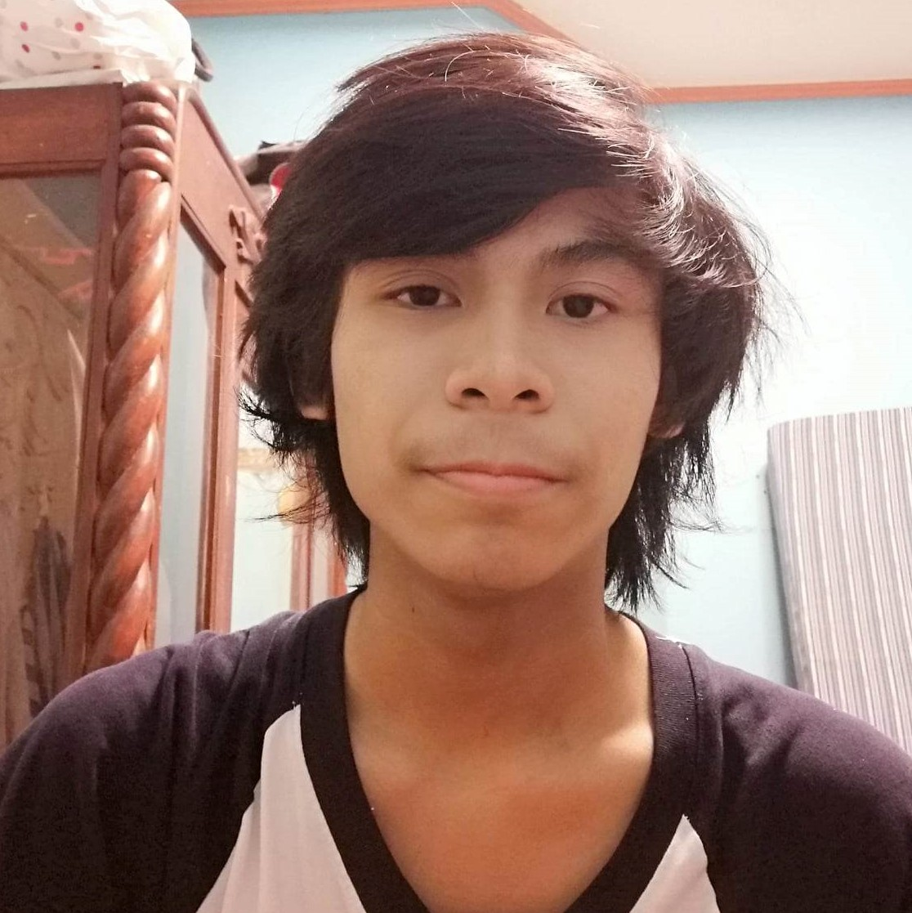

Kurt Timothy Aston C. Valdecañas
Hello, my name is Kurt Timothy Aston C. Valdecañas. I am 20 years old, and my birthday is on August 9, 2004. I became interested in pursuing computer science before I graduated SHS. I am currently learning how to manage my time properly. Discipline is my weak suit.
Lhyon Victor S. Salenga

My name is Lhyon Victor Salenga. Im 20 years old. My house is in the west section of Orani, where all the junkshops are. I study as a student in the Bataan Peninsula State Universty, and I stay at home every day for 24 hours. I don't smoke, but I occasionally drink. I'm in bed by 11 PM, and make sure I get eight hours of sleep, no matter what. After having a glass of warm milk and doing about twenty minutes of stretches before going to bed, I usually have no problems sleeping until morning. Just like a baby, I wake up without any fatigue or stress in the morning. I was told there were no issues at my last check-up. I'm trying to explain that I'm a person who wishes to live a very quiet life. I take care not to trouble myself with any enemies, like winning and losing, that would cause me to lose sleep at night. That is how I deal with society, and I know that is what brings me happiness. Although, if I were to fight I wouldn't lose to anyone.
Ralph Jaisell S. Cruz

Hello, I am Ralph Jaisell S. Cruz. I'm turning 21 years old this year on October 3. I've been interested with computers and stuff when I was young so when I had to choose a college program I ended up picking Computer Science. Even though it is hard at times, I still think that it is an interesting field and it is also relevant to our present community. I'm working hard as a student and will continue to do so when the time comes that I have to go to the actual field.
Marc Steven G. Nagamany
Hello, my name is Marc Steven Nagamany. I am 21 years old and reside in Mariveles, Bataan. I am half-Filipino and half-Sri Lankan, with a passion for music, playing various musical instruments such as the piano, bass, guitar, and more. I am currently studying at Bataan Peninsula State University, pursuing a degree in Computer Science, majoring in Software Development.